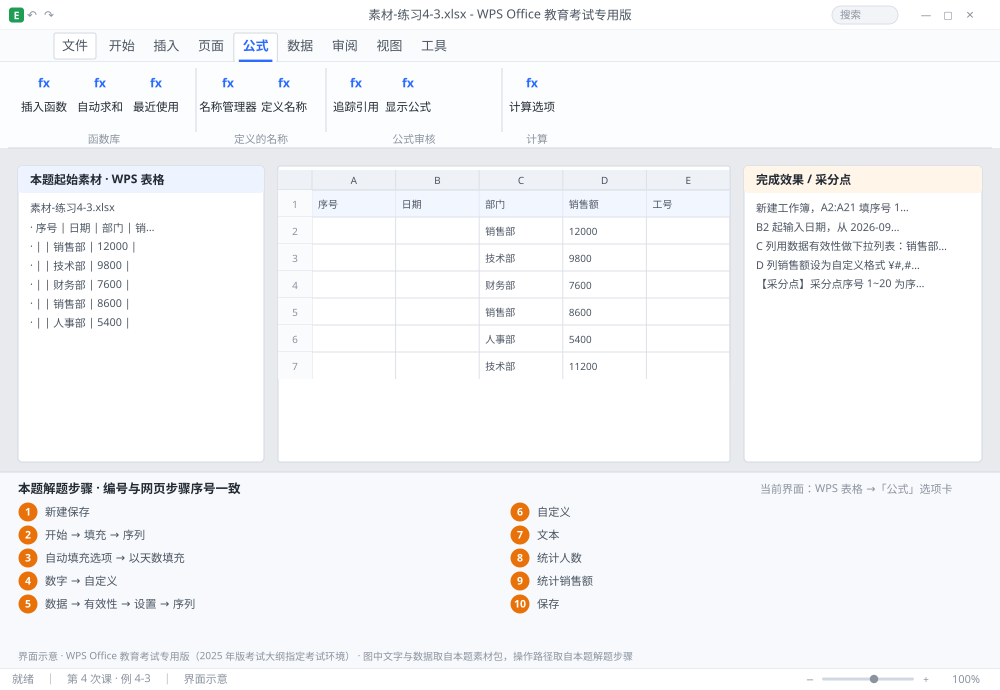

完成比对文档 · 例 4-3
录入 20 行：序列 + 日期格式 + 下拉列表 + 金额格式 + 前导零 ｜ 第 4 次课 / WPS 表格 ｜ 网页：实操-表格1.html ｜ 考试环境：WPS Office 教育考试专用版（2025 年版考试大纲指定考试环境）
用途 本页按修订后的题目要求与解题步骤生成，是交卷自查的结果基准：
逐项列出每一步应出现的可复核结果，配合模拟操作截图与解题结果文件使用。
它不是素材包的一部分，不会预置答案动作；起始素材仍从本题素材包下载。
一、本题起始素材包
目录：练习素材/练习4-3-数据录入与格式/ ｜
下载包：练习素材/下载/练习4-3-数据录入与格式.zip
二、题目要求
- 新建工作簿，A2:A21 填序号 1~20（用序列填充，不要手打）。
- B2 起输入日期，从 2026-09-01 开始按每天递增到 B21；格式显示为「2026年9月1日」。
- C 列用数据有效性做下拉列表：销售部 / 技术部 / 财务部 / 人事部。
- D 列销售额设为自定义格式 ¥#,##0.00。
- E 列工号为 001~020，必须保留前导零。
- 在 G1 用 COUNTIF 统计「销售部」的人数，G2 用 SUMIF 统计销售部销售额合计。
- 保存为 学号-姓名-练习4-3.xlsx。
三、解题步骤（编号与下方核对表、截图编号一致）
- 新建保存。Ctrl+N → F12 存为 学号-姓名-练习4-3.xlsx。
- 序列填序号。A2 输入 1、A3 输入 2 → 同时选中 A2:A3 → 拖动右下角填充柄（小黑方块）到 A21。或用「开始」→「填充」→「序列」→ 步长 1、终止值 20。
- 填日期。B2 输入 2026-9-1 → 拖填充柄到 B21（默认按天递增）。若变成按年递增，松手后点右下角「自动填充选项」→ 选「以天数填充」。
- 设日期格式。选中 B2:B21 → Ctrl+1（设置单元格格式）→「数字」→ 分类选「自定义」→ 类型框输入 yyyy"年"m"月"d"日" → 确定。年月日三个字必须加英文双引号，否则会被识别成代码。
- 做下拉列表。选中 C2:C21 →「数据」→「有效性」→「设置」→ 允许选「序列」→ 来源框输入 销售部,技术部,财务部,人事部（英文逗号分隔）→ 确定。
- 设金额格式。选中 D2:D21 → Ctrl+1 →「自定义」→ 类型输入 ¥#,##0.00 → 确定。
- 保留前导零。先选中 E2:E21 → Ctrl+1 → 分类选「文本」→ 确定 → 再输入 001、002…（也可以输入时先打英文单引号 '001，效果相同。）顺序不能反：先输数字再改文本，零已经丢了。
- 统计人数。G1 输入 =COUNTIF(C2:C21,"销售部") → Enter。
- 统计销售额。G2 输入 =SUMIF(C2:C21,"销售部",D2:D21) → Enter。
- 保存。Ctrl+S。
四、完成效果 / 采分点
采分点序号 1~20 为序列填充（非手打） · 日期 20 条且格式为「2026年9月1日」 · C 列为序列有效性下拉（点单元格出现箭头） · 金额格式为 ¥#,##0.00（显示两位小数） · 工号保留前导零（001） · COUNTIF 与 SUMIF 结果正确
五、逐项完成核对表
| 步骤 | 关键操作路径 | 应出现的结果（可复核） |
|---|
| 1 | 新建保存 | F12、学号-姓名-练习4-3.xlsx |
| 2 | 序列填序号 | A2、A3、A2:A3、A21、「开始」 |
| 3 | 填日期 | B2、B21、「自动填充选项」、「以天数填充」 |
| 4 | 设日期格式 | B2:B21、「数字」、「自定义」 |
| 5 | 做下拉列表 | C2:C21、「数据」、「有效性」、「设置」、「序列」 |
| 6 | 设金额格式 | D2:D21、「自定义」 |
| 7 | 保留前导零 | E2:E21、「文本」 |
| 8 | 统计人数 | G1、=COUNTIF(、C2:C21 |
| 9 | 统计销售额 | G2、=SUMIF(、C2:C21、D2:D21 |
| 10 | 保存 | 保存 |
六、模拟操作截图

界面示意 · WPS Office 教育考试专用版 · 橙色编号与本题解题步骤序号一致；
图中文字与数据取自本题素材包，功能入口取自本题解题步骤。
核对方法：按网页解题步骤完成并另存自己的成稿后，逐行比对本表第 3 列的
参数、公式、区域、文件名与对象数量；再对照网页「完成效果 / 采分点」检查版式是否一致。